크림처럼 부드럽게,
파우더처럼 보송하게.
부드럽게 펴 바르는 크림 제형.
볼 위에서는 보송한 컬러로.
서로 다른 실제 촬영을 순서대로 편집한 설명용 샘플입니다. 동일 색상·동일 부위의 전후 비교가 아니며, 보송함의 물성이나 효능을 영상만으로 입증하지 않습니다.
TAM BEAUTY · 2026.10.15 · 1차 시안 검토
첫 시안의 브랜드 결은 유지하고, 크림투파우더를 설명하는 이미지의 순서와 크기를 바꾸는 제안입니다. 아래 영상은 제형 흐름을 확인하기 위한 편집 샘플입니다.
기존 1차 시안 보기 ↗여섯 컬러 비교를 모두 지난 뒤 제형이 등장합니다. 이 제품을 왜 고를지 이해하기 전에 색부터 고르게 됩니다.
작은 영상 두 개를 각각 눌러야 합니다. 덜기·블렌딩·완성의 시간 흐름을 한눈에 읽기 어렵습니다.
핑크 연출컷은 색의 매력, 회색 제품컷은 용기 형태를 보여줍니다. 성분 설명에 크게 잘린 용기 사진을 두는 것은 메시지를 보태지 못합니다.
현재의 ‘부드럽게·생기·톡톡’은 젤리 치크에도 통합니다. ‘크림처럼 펴 바르고, 파우더처럼 보송하게’라는 마무리를 먼저 기억시켜야 합니다.
공식 제품 설명과 제공 이미지를 기준으로 정리했습니다. 오른쪽은 탐뷰티에 적용할 편집 판단입니다. 제품 효능이나 전환율을 검증한 비교는 아닙니다.
| 브랜드 · 제품 | 확인한 표현 방식 | 탐뷰티에 적용할 판단 |
|---|---|---|
| fwee ↗블러리 푸딩팟 | 푸딩 같은 촉감과 크림·파우더의 장점을 말하고, 피부와 입술에 번지는 블러 결과를 붙인다. | 제형 이름 → 손끝의 행동 → 피부 결과를 하나의 메시지로 연결.같은 제형이라고 단정하거나 퓌의 탄성·퍼포먼스 주장을 탐뷰티에 옮기지 않기. |
| CANMAKE ↗Cream Cheek | 손끝의 부드러운 젤 질감이 도포 후 보송해지는 변화를 명시하고, 손가락 도포와 겹바르기를 설명한다. | 크림투파우더가 소비자에게 어떤 사용감인지 가장 직접적으로 설명하는 비교 대상.캔메이크의 지속력·파운데이션 호환 주장은 탐뷰티 근거가 아님. |
| hince ↗허그 레이어 치크 | 컬러 제형 → 얼굴 도포 GIF → 캐시미어 촉감 → 블러 피부결 → 레이어링을 연결한다. | 색 비교와 제형·완성 피부의 역할을 분리하고, 제형 설명에 실제 사용 장면을 붙이기.파우더 제품이다. 자체 임상·비포애프터·24시간 수치는 따라 쓰지 않기. |
| M·A·C ↗Glow Play Cushiony Blush | 제품·눌러 편 제형·얼굴 이미지를 함께 보여주며 손끝으로 바르는 쿠션 같은 감촉을 강조한다. | 용기 사진만으로 끝내지 않고, 만졌을 때의 질감을 가까이 보여주는 방식.자연스러운 광을 표방한다. 탐뷰티의 보송 마무리 레퍼런스로 섞지 않기. |
| Dinto ↗Blurring Time to Kiss & Blush | 소프트 머드 텍스처, 매트 블러, 세 단계 톤 구성을 구체적으로 이름 붙인다. 제품 연출과 완성 메이크업을 함께 둔다. | 보송한 제형의 이름과 완성 메이크업을 연결하고, 패키지 연출에는 별도의 역할을 주기.립 겸용·3색 포트의 사용성을 탐뷰티의 기능으로 옮기지 않기. |
| rom&nd ↗Better Than Cheek | 과일 연출컷으로 색감을 제시하고, 손끝으로 제형을 문지르는 장면과 브러시 도포 장면으로 맑은 발색·밀착을 설명한다. | 쉐이크라는 컬러 이름만으로는 차이가 약하다. 탐뷰티는 크림에서 보송해지는 사용감을 앞세워야 한다.제형 전환의 직접 비교 제품은 아니다. 색상·마무리 설명만 비교했다. |
힌스 16개 상세 이미지, 퓌 주요 상세 이미지, 맥 제형 이미지, 딘토 제품·룩 이미지 확인. 캔메이크와 롬앤은 공식 제품 설명 중심 비교.
부드럽게 펴 바르는 크림 제형.
볼 위에서는 보송한 컬러로.
서로 다른 실제 촬영을 순서대로 편집한 설명용 샘플입니다. 동일 색상·동일 부위의 전후 비교가 아니며, 보송함의 물성이나 효능을 영상만으로 입증하지 않습니다.
최종 상세에서는 이 흐름을 히어로 바로 다음에 배치합니다. 휴대폰에서도 장면을 크게 보고, 마지막 완성 장면이 충분히 남도록 합니다. 자동 재생을 적용한다면 무음·정지 버튼·동작 줄이기 설정을 함께 지원합니다.
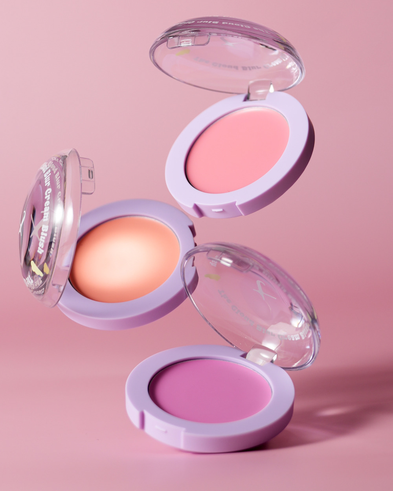
기존 히어로. 컬러는 예쁘지만 제품 표면의 강한 반사광이 촉촉한 광택을 먼저 연상시킨다. 제형을 설명하는 컷으로는 약하다.
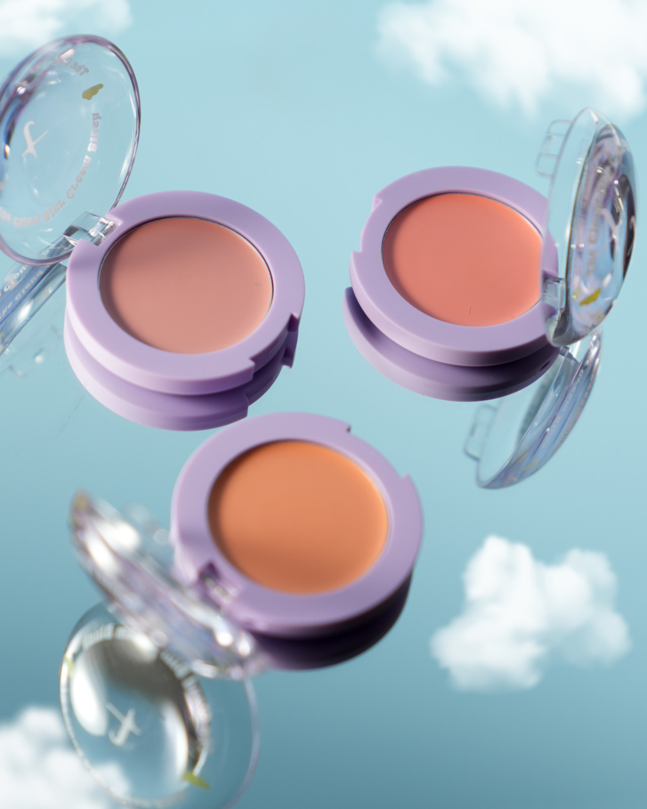
따뜻한 컬러군과 하늘·구름이 함께 보인다. P03과 나란히 쓰면 컬러 폭을 보여줄 수 있으나, 두 장을 크게 반복할 필요는 없다.
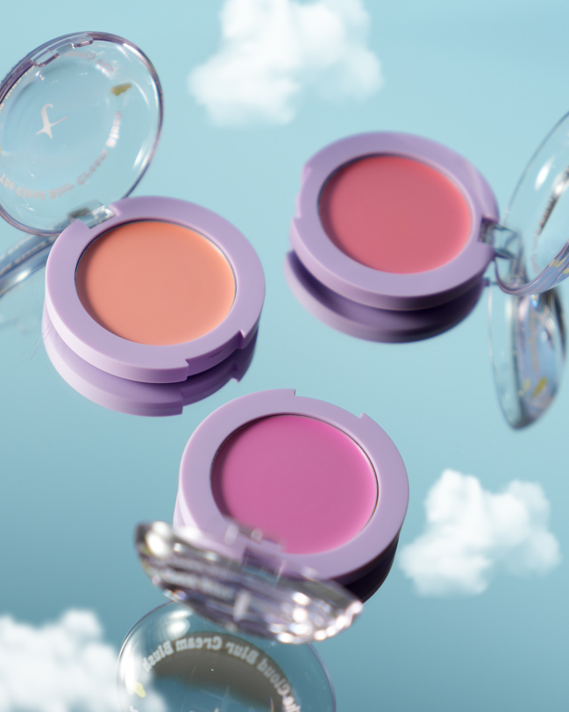
라벤더 용기, 구름, 피치·핑크·베리 색이 한 컷에 들어온다. 클라우드 라인을 기억시키는 도입에 적합하다. 아래에 실제 제형 장면을 바로 연결한다.
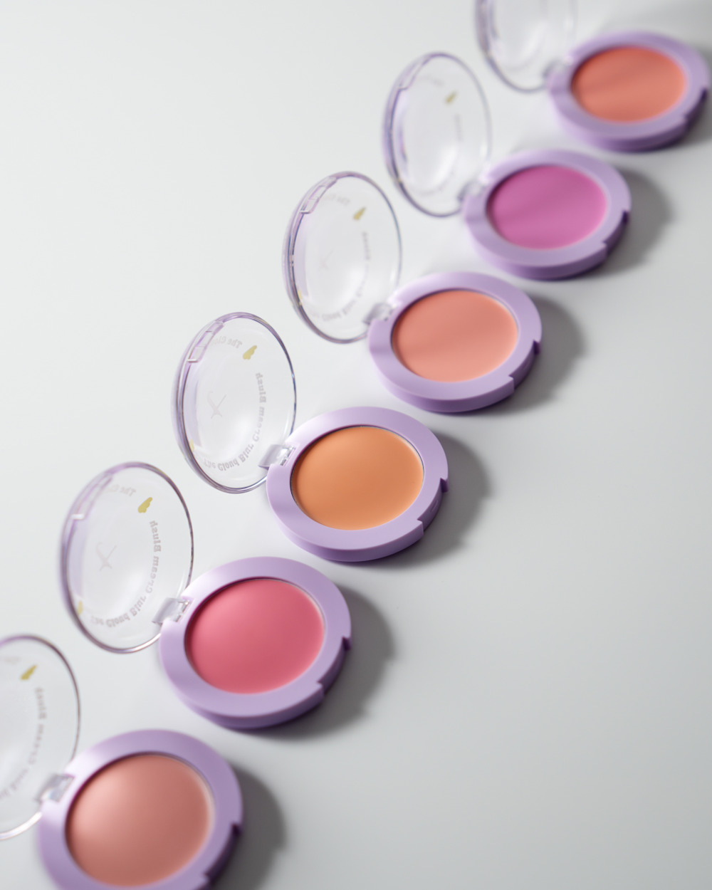
여섯 컬러를 한 번에 닫아주는 컷. 제품이 잘리지 않도록 원본 비율로 사용한다. 정식 색상 비교는 이름이 확인된 발색컷이 맡는다.
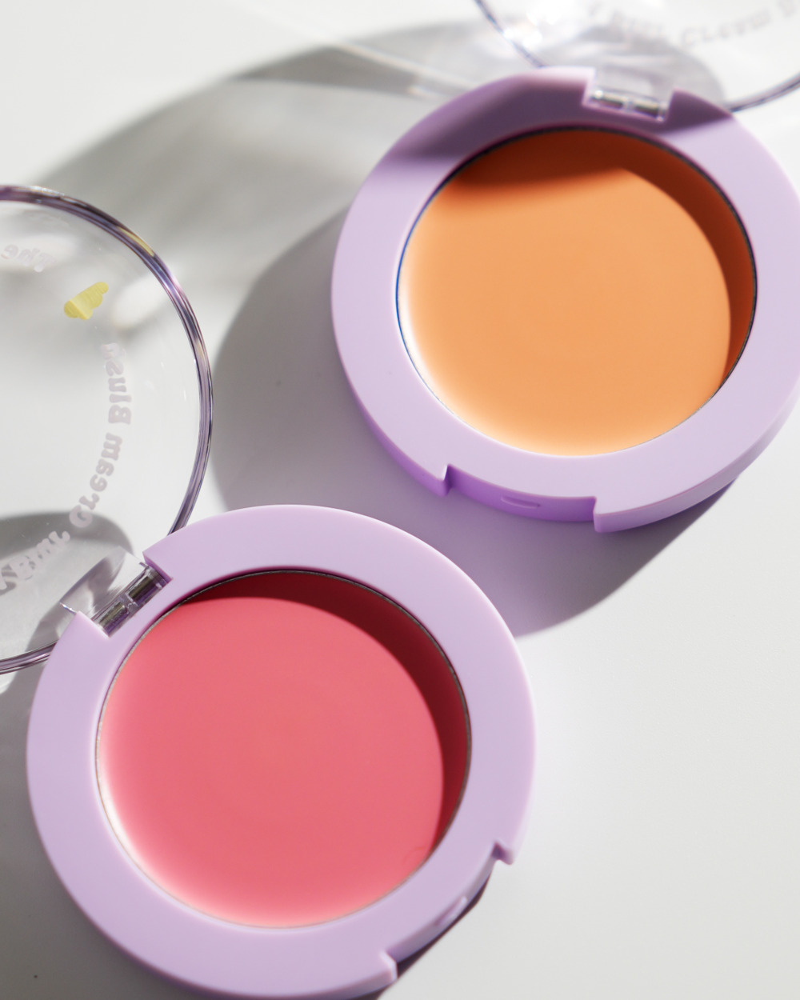
제품 외형은 선명하지만 현재 성분 섹션에서 사용한 큰 크롭은 두 제품을 잘라낸다. 식물성 오일의 설명과도 직접 연결되지 않는다.
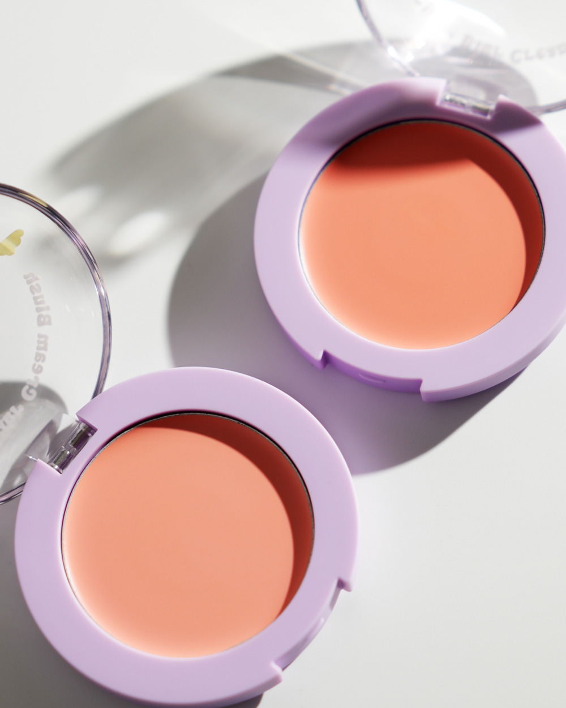
따뜻한 두 컬러의 제품 질감을 보여줄 때 적합하다. 개별 컬러 편집이나 광고 소재 후보로 보관한다.
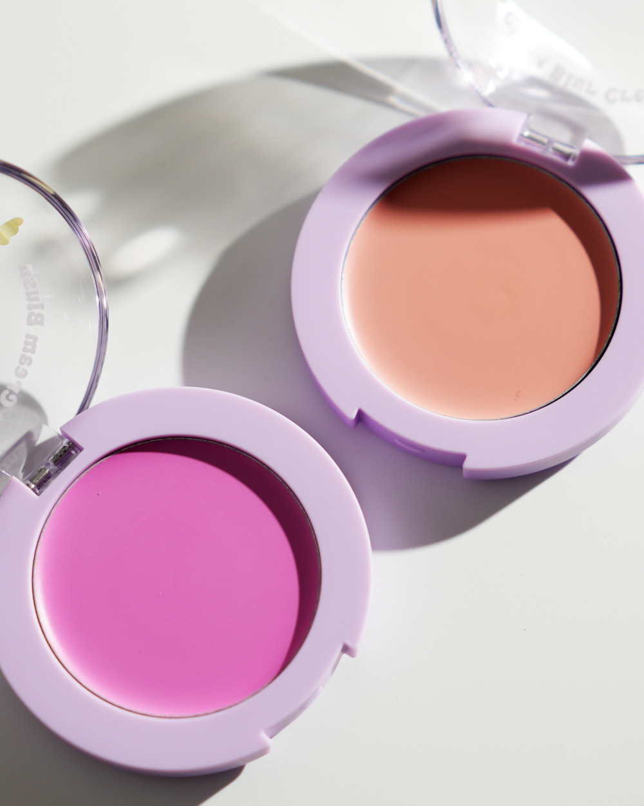
뉴트럴 컬러와 베리 컬러의 대비가 분명하다. P06과 함께 톤별 제품 소개를 할 때 사용하되, 이번 상세에 모두 넣지는 않는다.
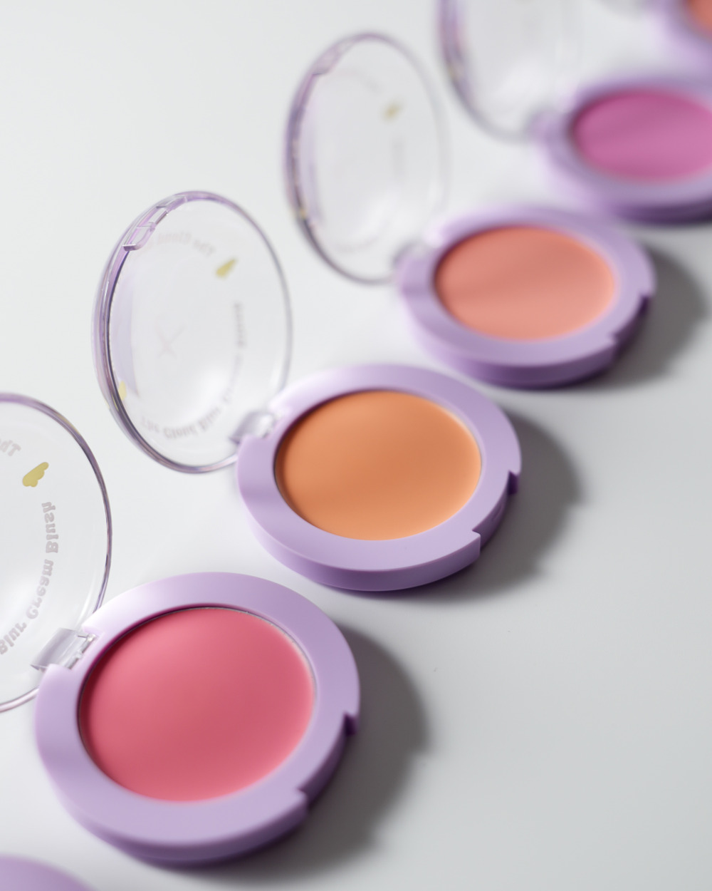
P04와 같은 배열을 더 가까이 잡은 컷. 비슷한 장면이 반복되고 여섯 제품 전체가 보이지 않아 엔딩 우선순위는 P04가 높다.
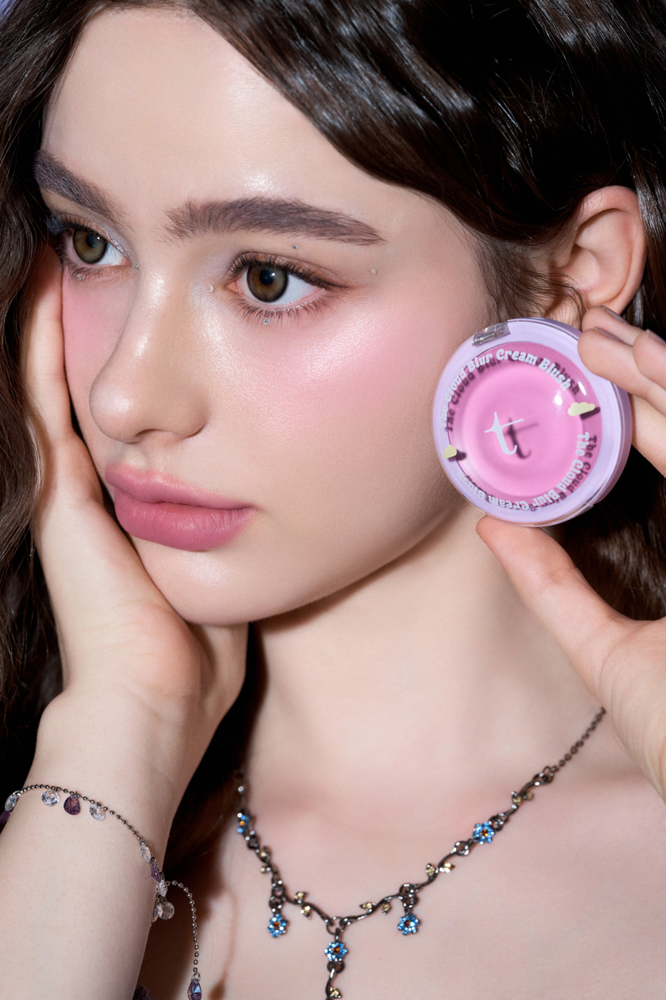
제품과 볼 메이크업이 함께 보이고 얼굴을 크게 읽을 수 있습니다. 피부결 확대 증거가 아니라, 소비자가 원하는 전체 인상을 보여주는 컷으로 한 번 사용합니다. 확인되지 않은 색상명은 붙이지 않습니다.
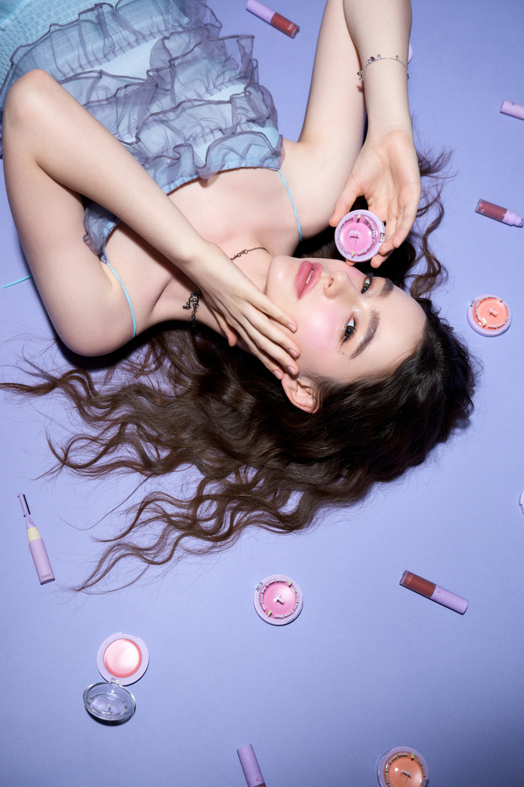
캠페인 분위기는 강하지만 여러 제품이 섞이고 얼굴이 뒤집혀 있습니다. 크림블러셔의 제형 설명을 이어가는 위치에는 집중력이 떨어집니다.
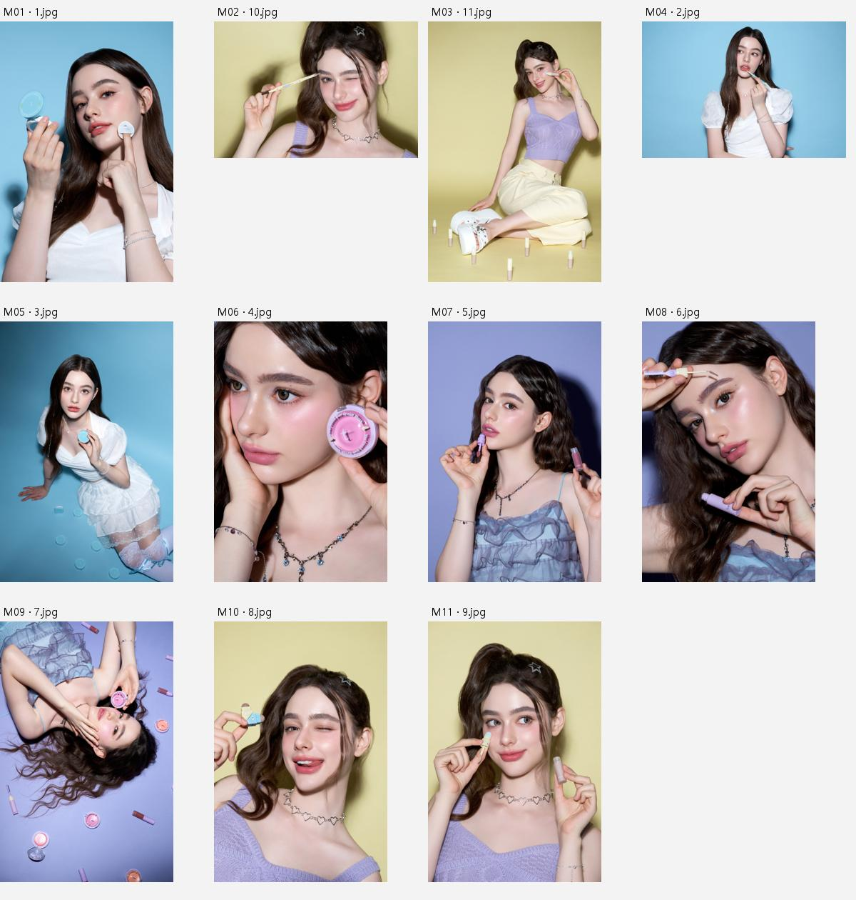
나머지 대부분은 파우더밤·립·브로우 등 다른 제품 중심 장면입니다. 블러셔 결과로 간주하지 않았습니다.
제품·시딩·셀프캠 파일마다 8개 시점의 프레임을 확인했습니다. 제품 배열 영상의 중복본과 젤리 치크 영상도 포함돼 있어, 모두를 크림블러셔 소재로 계산하지 않았습니다.
V27 제형 → V24 손날 블렌딩 → V22 완성 볼. 촬영 배경과 구도가 비교적 정돈돼 있고, 제형 흐름을 만들기 좋습니다.
V03은 제형·손바닥·볼이 이어집니다. V13은 손등 블렌딩이 보입니다. V16은 자연광 마무리가 잘 보이나 광원과 피부 톤이 달라 본편의 전후처럼 연결하지 않습니다.
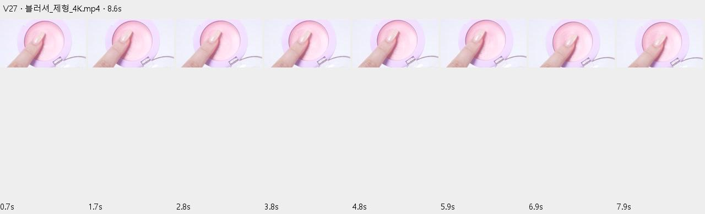
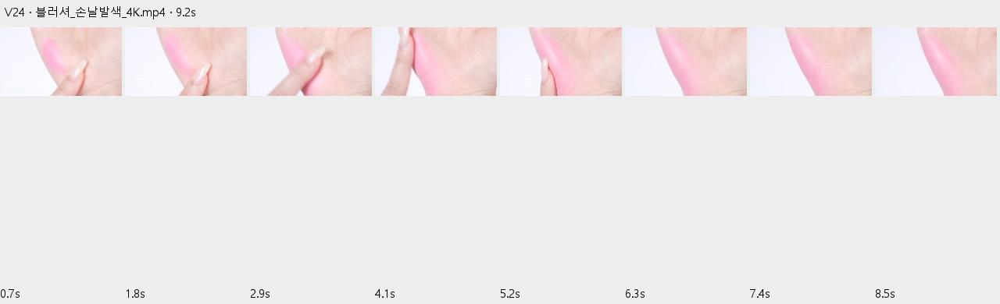
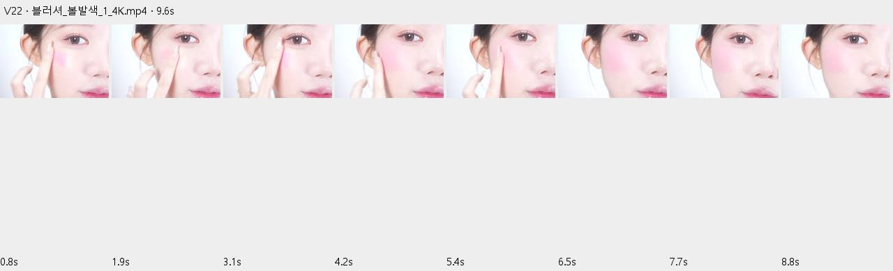
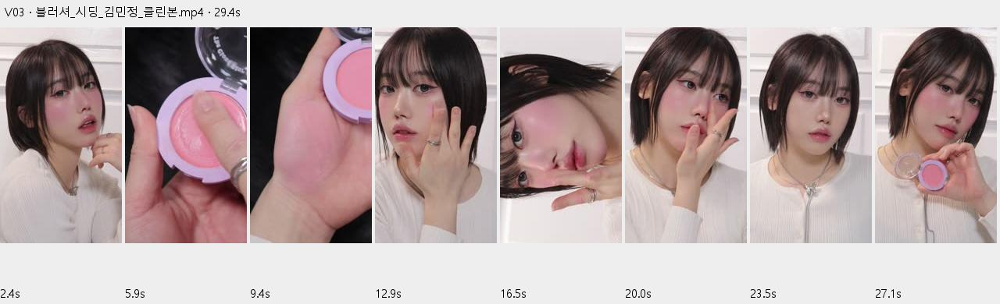
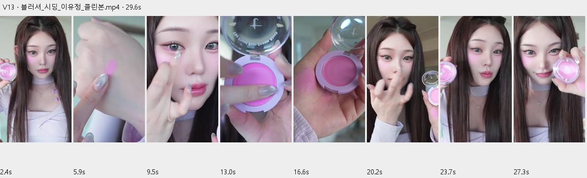
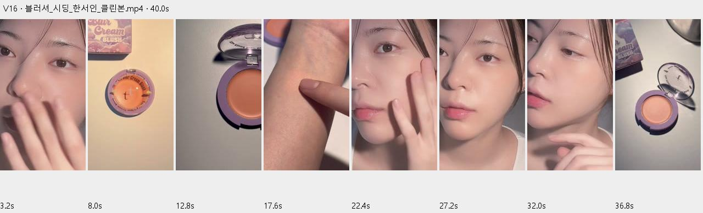
27개 전체 영상의 모든 프레임을 재생 검토했다는 뜻은 아닙니다. 채택한 세 소스는 편집 구간을 추가 확인했습니다. V19·V21은 스펀지 팁 젤리 치크가 보여 제외, V20은 제품 확인이 부족해 제외했습니다.
기존 폰트·화이트/블러시 톤·2열 컬러 비교는 유지합니다. 색 비교용 얼굴 여섯 장을 다시 크게 반복하지 않고, 오일 소개가 크림투파우더보다 강하게 보이지 않도록 비중을 조절합니다.
메인 후보: 크림처럼 부드럽게,
파우더처럼 보송하게.
이번 결과물은 비교·선별 제안과 제형 편집 샘플입니다. 기존 1차 상세페이지는 그대로 유지했습니다.